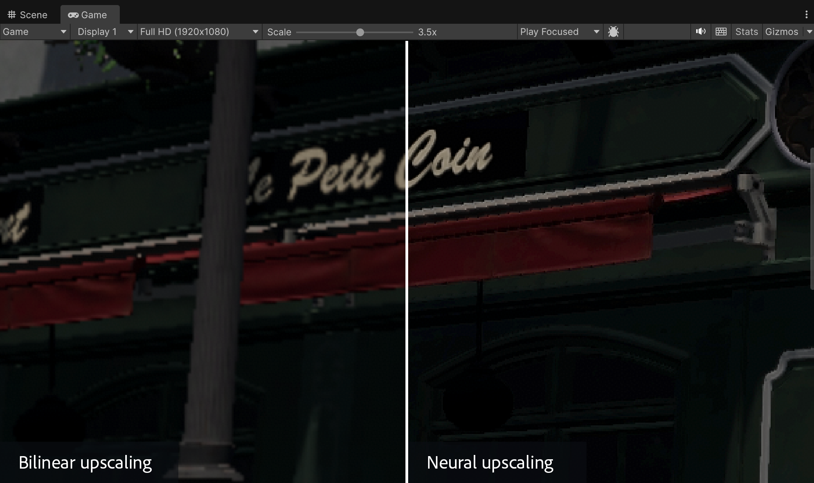
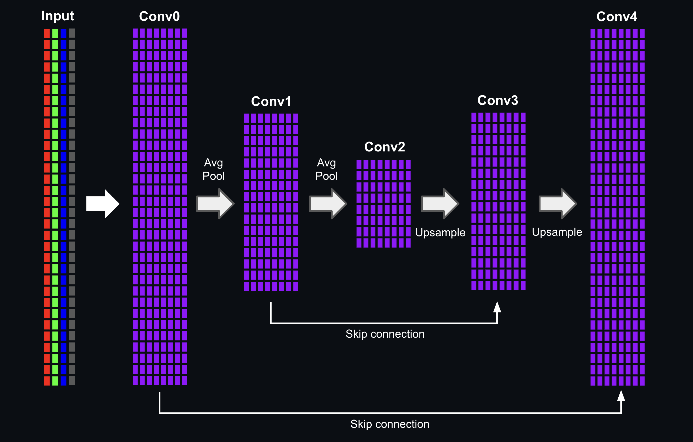
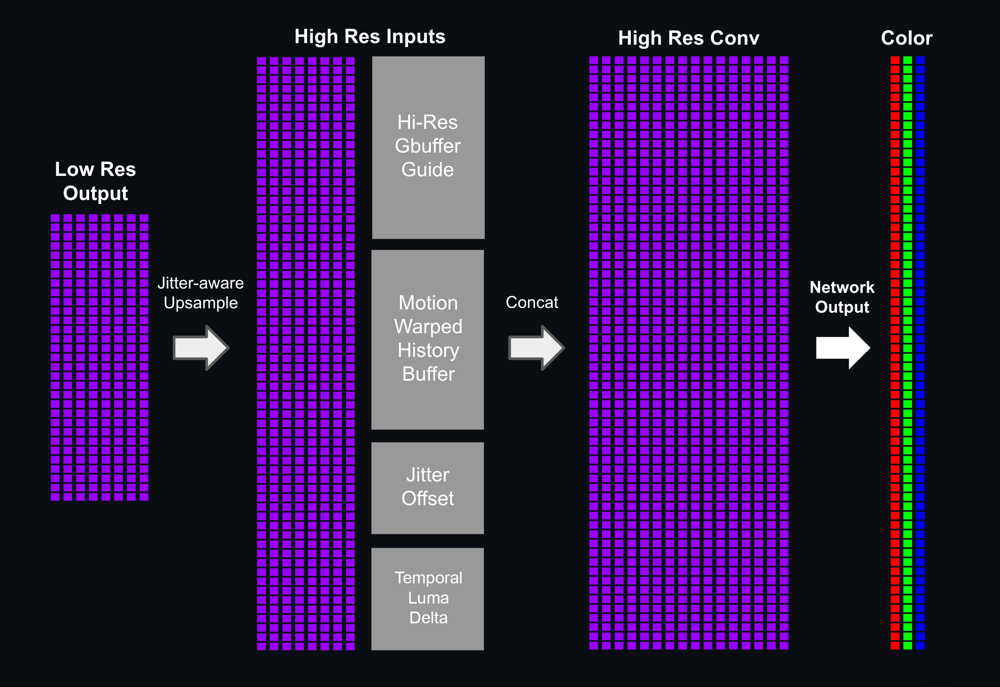
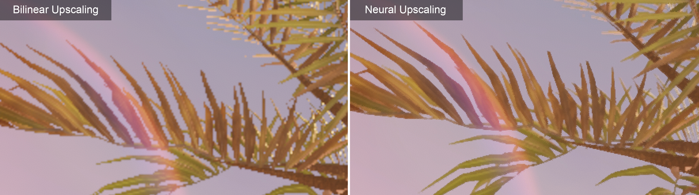
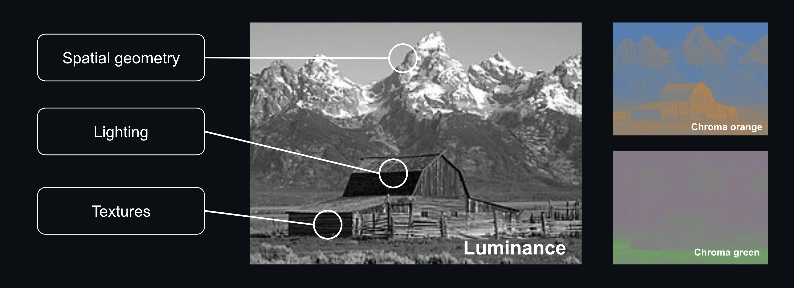
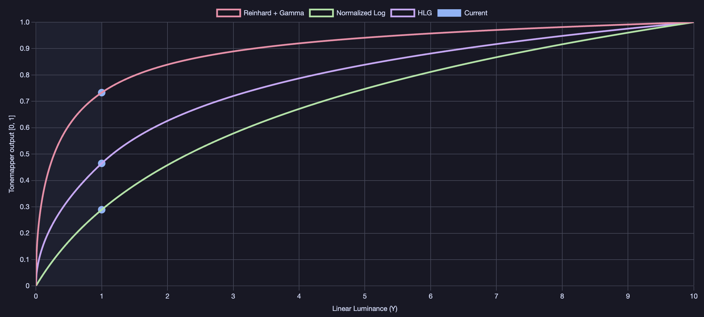
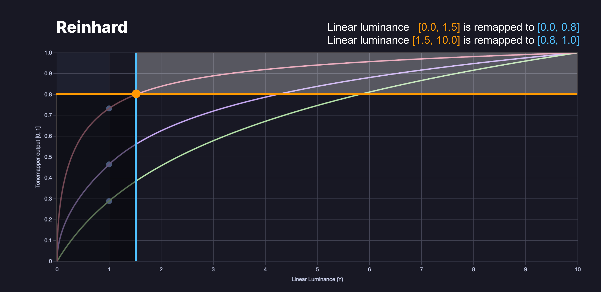
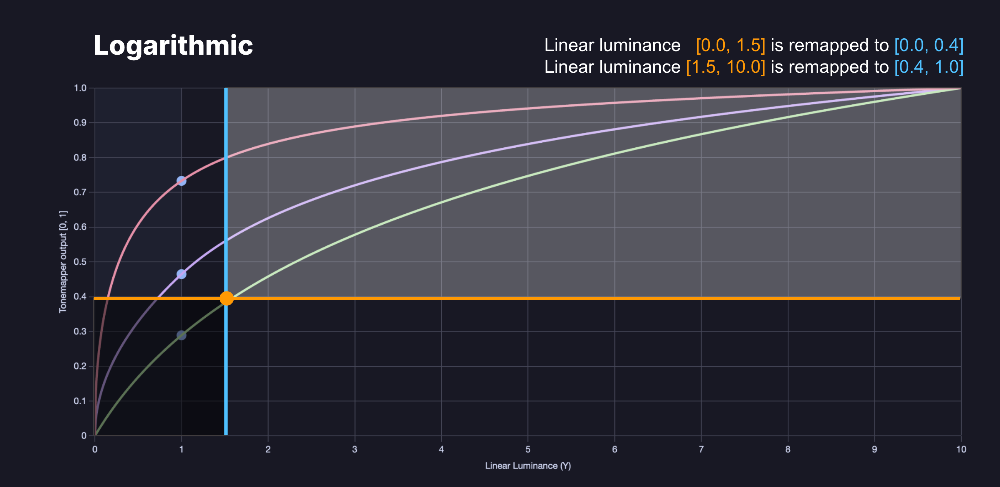
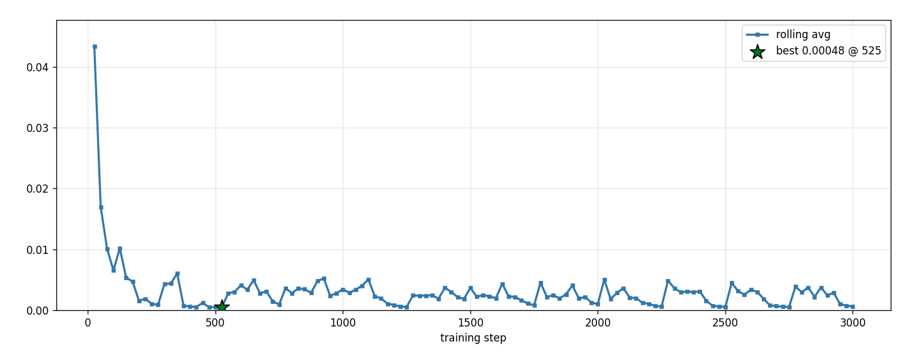
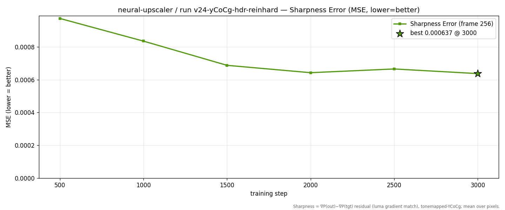

This article recaps my journey to implement a machine-learning upscaler for realtime renderers and game engines. I will share the challenges encountered along the way, and various tips and tricks to optimize the model's training and inference.
By training the model using gbuffer rendering data, we are able to reconstruct images with finer detail and generate a crisper image at higher resolution:

Bistro: 960x540 rendering upsampled to 1920x1080 /w neural upscaling
The model extracts latent features in low resolution, then performs a high-resolution reconstruction guided by a full-res G-buffer. Anchoring the network to high-res geometry and material data helps extract sharp details and ensure that textures and edges remain crisp and stable:
## Low resolution feature extraction
The first pass reads the model's inputs (LR color + depth) and runs them through a 2-level (three-scale) encoder/decoder operating at low resolution:
1. The initial encoder layer applies a 3×3 convolution to produce 8 hidden features, then a 2×2 average-pool halves the resolution.
2. The second encoder layer (3×3) produces 8 hidden features, then applies another 2×2 average-pool, reducing the resolution to a quarter of the input.
3. The bottleneck convolution layer produces 8 hidden features at the coarsest scale (quarter resolution).
4. The network then upsamples the hidden features back to input resolution. Each upsampling step adds a residual skip connection from the matching encoder level, preserving high-frequency edge detail before a decoder convolution.

Feature extraction
All convolutions use a 3×3 kernel with a ReLU activation. The pooling pyramid gives the network multi-scale spatial context while keeping cost low: the deeper convolutions run at half and quarter resolution, so only the two outermost convolutions touch full (LR) resolution. The output of this pass is a low-resolution feature map (width × height × 8) that captures the relevant characteristics of the input image at multiple scales.
## High-resolution frame reconstruction
The next pass reads the 8 low-res features and upsamples them to screen resolution with a jitter-aware ×2 upsample. We negate the sub-pixel jitter offset from our pixel coordinate to minimize flickering and stabilize our reconstruction.
In addition to the 8 latent features, we also concatenate addition inputs to the high-resolution 3×3 convolution layer:
- Motion-warped color history
- Temporal luma delta
- Current frame's jitter offset
- High resolution G-buffer
Similarly to temporal upscalers, we retrieve the last frame's motion-warped color by sampling the history buffer with a motion vector offset. Subtracting the motion vector offset from the screen coordinates will negate camera motion, and ensure we are sampling the history buffer at the previous frame's coordinates.
```
// Reproject: sample last frame's color. Subtracting the motion vector negates camera/object motion
float2 prevUV = uv - motionVector;
float3 warpedHistory = SampleHistory(historyBuffer, prevUV); // tonemapped-YCoCg
```
We also calcualte the "temporal luma delta", which is the difference in luminance between the current frame's (input) color and the motion-warped history buffer.
```
// Temporal luma delta:
float lumaDelta = inputColor.x - warpedHistory.x;
```
The layer outputs 3 channels: Y, Co, and Cg. These channels represent our pixel's luminance and chrominance (more details on this in the "Color Space" section).

Frame reconstruction
**Note:** this model modifies the deferred pipeline to render a full resolution target for the geometry (G-buffer) pass. All other render passes including the deferred lighting pass are kept at half resolution. The high resolution G-buffer is used as a guide to help our network reconstruct fine details and better preserve the underyling geometry.
## Temporal accumulation
The reconstruction is blended with the history buffer using a temporal anti-aliaser. This allows the upscaler to gradually refine the image across multiple frames, building up sub-pixel data at different jitter offsets.
```
float3 Accumulate(float3 R, float3 H, uint N)
{
// N is the per-pixel sample count, resets to 0 on disocclusion and capped at Nmax:
float alpha = (float)N / (float)(N + 1);
// temporal accumulation = α·history + (1−α)·reconstruction
float3 outY;
outY.x = alpha * H.x + (1.0 - alpha) * R.x; // luminance Y
outY.y = alpha * H.y + (1.0 - alpha) * R.y; // chrominance Co
outY.z = alpha * H.z + (1.0 - alpha) * R.z; // chrominance Cg
return outY; // Blended output (and next frame's history)
}
```
The upscaler will temporally accumulate newly reconstructed subsamples across frames, extracting texture detail and generating crisp edges:

Foliage upscaling (bilinear vs neural)
## Color space
When using RGB, all three channel will hold important spatial data such as edges and borders. The network will need more capacity to learn the relevant correlations across channel. Instead of operaeting in RGB, we can simplify the training process by transforming our input into the YCoCg color space. 'Y' encodes our pixel's luminance, while 'Co' and 'Cg' encode our pixel's orange and green chrominance.
When using YCoCg, the network can prioritize Luminance to easily learn and reconstruct spatial geometry, lighting and texture features. This allows us to generate a sharper and more detailed image with a smaller network.

YCoCg color space
The YCoCg encoding is applied using the following matrix:
\[
\begin{bmatrix} Y \\ Co \\ Cg \end{bmatrix} =
\begin{bmatrix} 1/4 & 1/2 & 1/4 \\ 1/2 & 0 & -1/2 \\ -1/4 & 1/2 & -1/4 \end{bmatrix}
\begin{bmatrix} R \\ G \\ B \end{bmatrix}
\]
The network will perform all feature extraction and upscaling in the YCoCg color space. Once the network's prediction is ready, we simply decode and unpack the YCoCg value back to 3 separate RGB channels, using the inverse matrix:
\[
\begin{bmatrix} R \\ G \\ B \end{bmatrix} =
\begin{bmatrix} 1 & 1 & -1 \\ 1 & 0 & 1 \\ 1 & -1 & -1 \end{bmatrix}
\begin{bmatrix} Y \\ Co \\ Cg \end{bmatrix}
\]
When using YCoCg encoding, we can manually weigh the different components of our model's output, and give higher importance to changes in luminance ('Y') over changes in chrominance ('Co', 'Cg'). This will teach our model to prioritize sharper edges and detail over minute color differences:
## Tonemapping
The upscaling network will execute prior to image post processing effects, such as tone mapping and bloom. This means our network must consume the lit color buffers in an HDR (linear) value range.
Training a network to perform feature extraction and upscaling in a large and unbounded range is less than ideal. The network will have to run through many training iterations, slowly increasing the kernel weights to high magnitude, so the network can output sufficiently high luminance values for intensely lit and emissive surfaces.
More importantly, our trainer's loss function (calculating the prediction error and loss for each training step) will produce a very high error when encountering high luminance values in our training data set. This can easily blow up our network's gradient, causing the network to overshoot and regress learning.
A much simpler solution is to run our network using a normalized [0,1] value range. To achieve this, we simply run our network's color inputs and outputs through a tonemapper:

Reinhard, Logarithmic and HLG tonemapping
We can choose the most optimal tonemapping function to best fit our content. In this example, I chose to implement a bounded Reinhard-Gamma tonemapper:
The upper bound (Lmax) is calculated by iterating through the training data set and extracting the brightest pixel in the HDR color target.
Reinhard-Gamma outputs a wide value range for darks and midtones. But as the input value gets closer to the remapper's ceiling, the output's value range begins to shrink. This will reduce our network's ability to produce very high luminance values in great precision. But since the vast majority of pixels in our training dataset lay within the dark-midtone range, this is an acceptable trade off.

Reinhard tonemapper
Once our network's prediction is ready, we need to remap our value back to linear space. This is achieved by applying an inverse of the tonemapper:
Another option would be to use a normalized Log tonemapper which provides a very wide range and precision for high luminance values. But this would regress image quality for dark and mid-range luminance, which is not acceptable in most cases.

Logarithmic tonemapper
A third option for high-luminance content is using a more complex Hybrid-Log-Gamma (HLG) tonemapper. HLG uses a gamma curve for dark/mid-range values and switches to a logarithmic curve for high luminance. This maintains a better balance for both mid and high tones compared to normalized Log.
## Clamping
The motion-warped history can be stale or disoccluded at a geometry border the foreground and background move differently, so a single motion vector warps *across* the boundary and bilinearly mixes two surfaces' colors. The per-frame reconstruction also suffers from noisy chrominance because we weight luminance far more heavily than chroma in the loss function. This may show up as colored fringing along edges.
Both isssues are addressed by clamping to the low-resolution color neighborhood, a variance-clipping technique borrowed from temporal anti-aliasing. For each pixel we build a color box from the 3×3 LR neighborhood (its mean ± γ·σ, computed in YCoCg) and clamp the target value into that box:
```
// Variance-clip a YCoCg value `c` to the local LR color box
float3 clampToLR(float3 c, float2 uv, float gamma) {
float3 m1 = 0, m2 = 0;
for (int dy = -1; dy <= 1; ++dy)
for (int dx = -1; dx <= 1; ++dx) {
float3 s = rgb2ycocg(SampleLR(uv + offset(dx, dy)));
m1 += s;
m2 += s * s;
}
m1 /= 9.0; m2 /= 9.0;
float3 sd = sqrt(max(m2 - m1 * m1, 0.0));
return clamp(c, m1 - gamma * sd, m1 + gamma * sd);
}
```
We clamp the motion-warped history to this box before blending. If the warp landed on a clean, consistent surface the history sits inside the box and passes through untouched. Where it sampled across a disocclusion or geometry border, it is pulled back toward the current frame. Rejecting ghosts and the chromatic edge fringe.
The same box can be applied to the reconstruction. We clamp only the `Co`/`Cg` components and leave luminance untouched. This removes the chromatic fringing while keeping the luminance detail fully crisp.
## Capture rig
To build our training pipeline, we need to first implement a training simulation and extract the needed image data from our rendering engine. This process must be done carefully to ensure there are no mismatches between our trainer and rendering pipeline. Keep a close eye on factors such as texture formats, coordinate space and orientation.
We start by injecting additional "capture" passes within our existing render pipeline. These passes will copy the needed buffer data from the GPU and save the captured images to disk:
1. Low res color input
2. Low res motion vectors
3. High res color target
4. High res g-buffer guide (depth, normals, albedo)
5. Per-frame jittering offset
We render our simulation using two scenarios: a fly through of our 3D environment and a static camera. The first scenario will generate a range of motion vector magnitudes by varying the camera speed throughout the capture. The second scenario uses a static camera, and will focus our network's training on sub-pixel reconstruction using the per frame jittering offset.
Our capture rig uses two cameras with a synchronized transformation. The first camera will capture our model's inputs, rendering all passes (except the g-buffer pass) at half res. The second camera renders the same sequence in parallel using a full res framebuffer. This pass enables MSAAx8 to improve the image quality.
Left: high resolution camera (4K), Right: low resolution camera (1080p)
When using an HDR rendering pipeline, the color capture pass must be injected prior to the tonemapping and post processing pass. This allows us to extract the renderer's lit color using a floating point buffer format. My example implements a GPU-copy ("blit") pass, writing the data to a temporary buffer using a 16-bit per channel floating point format. The temp buffer is then serialized to disk using the tinyexr library and saved as .EXR file format.
We must use a lossless and high precision format for the color, motion vector and depth. But all other inputs can be captured using a lossy .png format to save disk space and memory during training. This can become crucial for larger datasets. In my example, a relatively small capture of 512 frames occupied around 35GB in storage.
We also record a manifest file alongside our training data. This file is loaded by the training framework to initialize training using the correct configuration. Each entry serializes a relative path to the training samples along with the frame's jitter offset:
```json
{
"scene": "Capture",
"frame_count": 512,
"hr_width": 3840,
"hr_height": 2160,
"lr_width": 1920,
"lr_height": 1080,
"downsample_factor": 2,
"color_space": "linear-hdr",
"motion_convention": "uv_current_minus_previous",
"jitter_units": "texel_lr_px",
"samples": [
{
"frame": 0,
"lr_color": "lr/000000.exr",
"hr_normal": "hr_normal/000000.png",
"hr_albedo": "hr_albedo/000000.png",
"hr_depth": "hr_depth/000000.exr",
"motion": "mv/000000.exr",
"target": "hr/000000.exr",
"jitter": [
-0.25,
-0.25
]
},
]
}
```
## Data cropping
The first task of our training engine is loading the data set. Attempting to front-load any reasonably sized data set will consume too much memory. Our training engine will quickly run OOM and crash.
To circumvent this, we implement a cropping data loader. Our trainer initializes by loading a quarter-view of the input data. Every 1000 training steps or so, our trainer will reload a different region of the input data set from disk. Over time, our trainer will iterate over all of our data samples:
Training data cropping
We can use the cropped data loader to train our model using a large number of high resolution frames, while keeping memory usage to a minimum.
## Data sequencing
The training engine will iterate over the data set frame-by-frame, using the data as model inputs and target reference. Iterating over a large data set will increase the training time and difficulty. Training the network using the same sequence, over and over again, will also bias our network's learning towards certain animations.
Data sequencing is used to speed up training and randomize the inputs. The trainer operates on a smaller data window which progressively increases over the intitial 50% of training steps. Every N frames (N = Sequence size) the trainer will switch to a different sequence:
Training data sequencing
The shortest training window is tied to the sub-pixel jitter pattern. The temporal accumulator converges by averaging the reconstruction across the jitter phases, so the accumulated result only equals the anti-aliased target once a sequence has covered a full cycle of jitter offsets. We use a Halton sequence of 32 phases (for a ×2 upscale), so the minimum sequence length is 32 frames.
## Output loss
At every training step, the engine compares the network's output against the high-resolution reference and computes the prediction error:
From left to right: Model prediction, Target and Error
Rather than using a single error term, the loss is a weighted sum of several terms, each shaping a different aspect of the output. All terms are computed in the tonemapped YCoCg space (see "Tonemapping" and "Color space"). The first term guides the model's output to match the reference.
\[
e_\text{out} = Output - Target
\]
We compare the model's prediction (per YCoCg channel) to the target reference and calculate the prediction error and Huber loss (described in the next section). This project sets the luminance weight to 4 and chromatic weights to 1, prioritizing edge and detail generation over chromaticity.
The error and loss values are recorded during training and saved to a log. This is used to visualize and monitor the network's learning across training steps and model iterations:

Output loss
Loss is minimized fairly quickly but will spike at somewhat regular intervals. These spikes happen whenever the loader randomizes the input data sequence.
## History loss
The history loss term is added to penalize the network for drastic changes in output-history delta compared to the reference data:
We first calculate the delta in the model's prediction/history. Then calcuate the delta in the target reference. If the deltas match, the temporal error is zero. The history loss is used for reconstruction consistency during motion. This term is only active when history exists (skipped on the first frame and at disocclusions).
History error
## Sharpness loss
To stop high-frequency detail from regressing toward a blurry mean, we add an edge-matching term on luminance. It compares the luma difference between a pixel and each of its neighbours:
Matching the reference's gradient structure forces the output to reproduce its edges at higher contrast.

Sharpness error
## Huber (Smooth L1 loss)
Every term uses the Huber loss rather than a plain squared error. Huber loss is quadratic for small residuals and switches to linear once the residual exceeds a threshold \( \delta \):
The quadratic region gives smooth gradients near the target, while the linear region caps the gradient magnitude for large residuals. This makes training robust to outliers. A single very bright or disoccluded pixel can not dominate a batch and blow up the gradient. Combined with the Reinhard-Gamma tonemapping, which already compresses the HDR range into [0,1] range, the loss stays in a stable and bounded range throughout training.
## Model export and inference
After training is done, the trained model weights are serialzied into a binary file format. The trainer also saves a model description file using the .json format. This file includes a list of properties which will be used to configure, load and run our model's inference in the game engine:
```json
{
"arch": {
"depth_input": true,
"gbuffer_input": true,
"gbuffer_channels": 5,
"lowpass_in": 4,
"highpass_in": 20,
"out": 3,
"hidden": [8,8,8,8,8],
"params": 3357,
},
"blend_space": "perceptual_reinhard_gamma2.2",
"history_clamp": 1.5,
"lr_net": {
"downsample": "avgpool2x2",
"skip": "residual_add",
"type": "unet2",
"upsample": "nearest2x"
},
"output_space": "ycocg",
"scene": "Sponza",
"tonemap": {
"gamma": 2.2,
"lmax": 2.5,
"mode": "bounded_reinhard"
}
.....
}
```
The next step is to implement a custom upscaling pass and inject it within the render pipeline. This is done using the dedicated 'IUpscaler' interface provided by Unity in the latest SDK versions:
```
// Register a custom upscaler in the URP Asset's "Upscaling Filter" dropdown
public class NeuralUpscaler : AbstractUpscaler
{
public override string name => "Neural Upscaler (IUpscaler)";
public override bool isTemporal => true; // we consume motion vectors + a history buffer
public override UpscalerOptions options => _options; // settings surfaced in the inspector
// Set the per-frame sub-pixel jitter
public override void CalculateJitter(int frame, float ratio, out Vector2 jitter, out bool allowScale)
{
jitter = NeuralJitter.Offset(frame); // Halton(2,3), 32-phase, ±0.25 LR-px
allowScale = false;
}
// Bias LR texture sampling to match the capture-time mip bias
public override float CalculateMipBias(Vector2Int pre, Vector2Int post)
=> Mathf.Log((float)pre.x / post.x, 2f);
// Inject the compute passes into the render graph (binds LR color, depth, motion + HR g-buffer)
public override void RecordRenderGraph(RenderGraph graph, ContextContainer frameData)
{
// ... acquire inputs, then dispatch the kernels below ...
}
}
```
Neural inference is embedded within a compute shader written in HLSL. The network is imlpemented using multiple kernels for the low and high resolution passes:
```
// Low-resolution U-Net (feature extraction)
#pragma kernel UNetLoadInput // pack LR color + depth into the feature buffer
#pragma kernel UNetConv // 3x3 convolution + ReLU
#pragma kernel UNetPoolDown // 2x2 average-pool (downsample)
#pragma kernel UNetUpAdd // upsample + residual skip-add
// High-resolution reconstruction
#pragma kernel WarpHistoryHR // reproject history + warp the per-pixel accumulation count N
#pragma kernel FusedUpsampleHRConvBlend // x2 feature upsample, HR 3x3 conv, blend with history
#pragma kernel SharpenPresent // optional display-space sharpen
// Each frame dispatches the kernels in order:
// UNetLoadInput -> (UNetConv -> UNetPoolDown)x2 -> UNetConv -> (UNetUpAdd)x2 // LR features
// -> WarpHistoryHR -> FusedUpsampleHRConvBlend -> SharpenPresent // HR output + history
```
The trained model weights are loaded in Unity using a C# script and set as storage buffers for the neural kernels:
```
// The trained weights are exported as one flat float32 blob
byte[] bytes = options.weights.data;
var floats = new float[bytes.Length / 4];
Buffer.BlockCopy(bytes, 0, floats, 0, bytes.Length);
// Upload to a GPU storage buffer
_weights = new ComputeBuffer(floats.Length, sizeof(float));
_weights.SetData(floats);
// Bind it to the kernels that consume the model weights
cmd.SetComputeBufferParam(cs, kUNetConv, "_Weights", _weights);
cmd.SetComputeBufferParam(cs, kFusedHR, "_Weights", _weights);
```
After implementing the IUpscaler interface, the neural upscaler will be available through Unity's "Upscaling Filter" settings. When enabled, the network will run prior to post-prcoessing and upscale the render pipeline's color buffer to the display resolution: